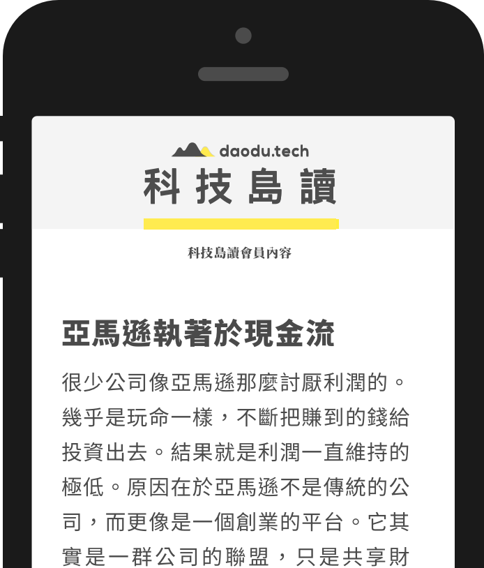

科技島讀－你的科技策略長
策略思維是新一代領袖必備的競爭力。科技是影響今日世界的最大力量。因此「科技島讀」為台灣讀者分析科技時代最重要的商業思維。
一般市面上的科技報導，多停留在陳述事件表面、追逐新聞熱點，或是編譯整理國外意見的程度。科技島讀則會深入剖析；除了解構新聞的來龍去脈，並分析其中角色的策略，從中汲取一般性的原則，以預測未來，並找出對台灣的啟示。
科技島讀以「島」命名，特別是為了彌補台灣科技業缺乏主體論述。因此周欽華不但會分析國際重要新聞，也會站在台灣的角度，大膽提出分析架構，思考最適合台灣人的策略。
周欽華
「科技島讀」由周欽華全職製作。周欽華長期研究科技、媒體與商業策略。曾在美國擔任專利訴訟律師，以及在台灣高科技公司擔任經理人，負責與世界大型科技公司的商業交易案。於 2012 年創辦原創網路媒體「有物報告」，並於 2015 年開台灣先河，轉型為網路原生訂閱制媒體。於 2017 年成立「科技島讀」，專注分析科技及商業趨勢。看更多

島讀的承諾
- 秉持理性、冷靜的態度
- 對於重要事件，勇於提出思考架構
- 不卑不亢的站在小國的位置思考
會員推薦
科技島讀電子報
重要新聞，深度分析
- 每週二、三、四提供深度趨勢分析*。針對重要的科技趨勢，深入探討背後的結構與策略。所有內容由周欽華製作。沒有聳動標題，只有真心誠意的乾貨。讓你率先掌握科技時代的商業思維。
- 不定期寄出音頻 (podcast) ** 、長文，以及舉辦會員聚會（見下方）
- 於網站上閱讀所有過往文章

會員聚會

- 限會員參加，每次不超過 50 人。目前約一季舉辦一次。
- 供會員與周欽華一起交流、討論，並且回饋產品的意見。
三大保障
1
深度分析
所有資料整理、分析撰稿皆由周欽華全職製作，深度探討商業事件的脈絡及未來預測。
2
沒有廣告
你的付費讓科技島讀得以專心製作高品質的內容，不用擔心會看到惱人的廣告或是隱藏的置入。
3
安心購買
首次訂購者 30 天內無條件全額退費。